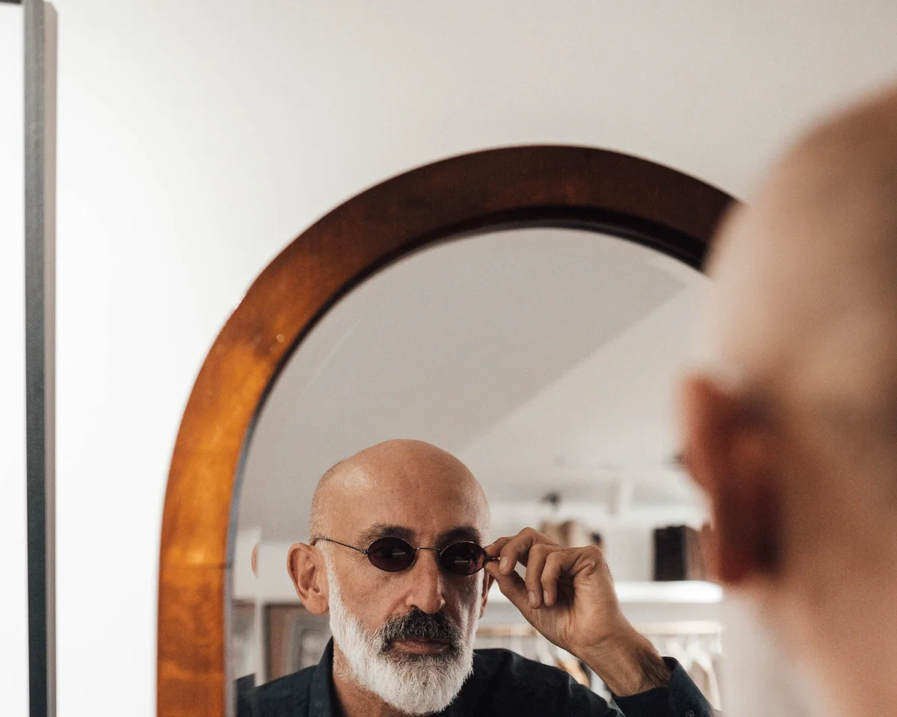

Salud Visual
Personalizada
Combinamos tecnologÃa de primer nivel con un trato cercano y sin prisas.
En Panisse Óptica cada visita empieza con una conversación. Queremos entender cómo usas tu vista, cuál es tu estilo de vida y qué te preocupa. Solo asà podemos ofrecerte la solución que realmente necesitas.
Nuestro equipo de ópticos-optometristas cuenta con formación continua y las certificaciones más exigentes del sector.
Pedir cita →
AsesorÃa de imagen
por videollamada
La montura que llevas dice algo de ti antes de que hables. En la asesorÃa online analizamos tu morfologÃa facial, tu colorimetrÃa y tu personalidad para encontrar las gafas que realmente te representan — desde donde estés.
La sesión es por videollamada. Llegamos con el trabajo hecho: un estudio previo de tu caso basado en las fotos y la graduación que nos facilites antes de la cita.
- Estudio de morfologÃa facial y colorimetrÃa
- Selección de monturas adaptada a tu imagen y estilo
- Incluida en la compra si se cierra un pedido
- 50 € si no se formaliza compra
Centro ZEISS
Vision Expert
En 1846, Carl Zeiss abrió su taller de precisión en Jena. Veinte años después, el fÃsico Ernst Abbe transformó para siempre la fabricación de lentes al aplicar por primera vez el método cientÃfico a la óptica — poniendo fin a la era del ensayo y el error. Esa obsesión por la precisión lleva 175 años siendo la columna vertebral de cada lente ZEISS.
En Panisse Óptica trabajamos con lentes ZEISS porque creemos que la calidad de la lente es tan importante como la montura. No basta con ver bien: hay que ver con nitidez, confort y sin fatiga durante todo el dÃa.
- Lentes progresivas ZEISS SmartLife e Individual 2
- Lentes ZEISS ClearMind para máxima claridad visual
- Tratamientos DuraVision: antirreflejante, antisuciedad y UV
- Asesoramiento personalizado según tu estilo de vida
Vista
Cansada
La presbicia afecta a más del 90% de las personas mayores de 45 años. Si tienes que alejar los textos o notas que te fuerzan los ojos de cerca, es el momento de actuar.
Ofrecemos una amplia gama de soluciones: lentes progresivas de última generación, lentes de oficina, bifocales y diseños especializados para trabajo con pantallas.
- Lentes progresivas premium ZEISS SmartLife y DriveSafe
- Diseños especÃficos para cada estilo de vida
- PerÃodo de adaptación garantizado
- Asesoramiento personalizado sin presión

Baja
Visión
Cuando las gafas convencionales ya no son suficientes. Evaluamos tu visión funcional y te asesoramos sobre las ayudas ópticas que pueden ayudarte a ver mejor y mantener tu autonomÃa: lupas, telescopios, filtros de alto contraste y más.
Trabajamos en coordinación con el oftalmólogo para personas con DMAE, glaucoma avanzado, retinopatÃa diabética u otras condiciones que reducen la visión de forma permanente.
- Evaluación de visión funcional
- Lupas iluminadas y gafas lupas
- Lupas electrónicas portátiles y de sobremesa
- Telescopios
- Filtros y lentes de alto contraste
MiopÃa
en Niños
La miopÃa infantil está creciendo exponencialmente. La buena noticia es que existen tratamientos eficaces para ralentizar su progresión y proteger la visión futura de tu hijo o hija.
Cuanto antes se detecte y se gestione, menor será la graduación final. En Panisse Óptica hacemos un seguimiento personalizado de cada caso, con revisiones periódicas y las soluciones ópticas más adecuadas para cada niño.
- Diagnóstico precoz con autorefractómetro pediátrico
- Gafas MiyoSmart con tecnologÃa DIMS
- Lentes de contacto desenfocadoras para casos indicados
- Seguimiento cada 6 meses incluido
Lentes de
Contacto
Adaptamos todo tipo de lentes de contacto: blandas diarias y mensuales, lentes rÃgidas permeables a los gases, lentes tóricas para astigmatismo y lentes multifocales para presbicia.
La primera adaptación incluye un perÃodo de prueba, instrucciones de manejo y revisión de control sin coste adicional.
- Adaptación de lentes blandas y rÃgidas
- Lentes para ojo seco severo
- Lentes de colores y estéticas certificadas
Más servicios
También te cuidamos
Fatiga Visual
Evaluación integral del sistema visual binocular: convergencia, acomodación, motilidad ocular. Te orientamos si tienes cansancio, dolor de cabeza o visión doble y, si hace falta, te derivamos al especialista.
Pedir cita →Prevención Glaucoma
Medición de la presión intraocular y derivación al oftalmólogo si vemos señales de riesgo. Detección precoz de patologÃas silenciosas que pueden comprometer la visión.
Pedir cita →Instrumentos Ópticos
Selección de prismáticos, lupas de lectura, telescopios y ayudas visuales para baja visión. Asesoramiento experto para astronomÃa, naturaleza y uso profesional.
Consultar →Gafas para la Boda
Asesoramiento personalizado para encontrar la montura perfecta para tu dÃa especial. Marcas exclusivas, asesorÃa de imagen y adaptación con tiempo para pruebas previas a la ceremonia.
Ver más →¿No sabes qué
servicio necesitas?
Llámanos o pide cita y te orientamos sin ningún compromiso. Tu salud visual es lo primero.